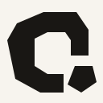

Case Page
What does convenience cost?
The visible layer is not the whole structure.
C-F1 Minimal Optical is the selected Understory symbol. This board documents final assets, wordmark relationships, favicon sizes, and website integration tests without changing content or typography.
未合，不等于终止。The detached lower element is another layer, another thought, another continuation.
Primary, black, white, brand green, small icon, and favicon-ready SVG assets.

FaviconThe wordmark is not redesigned. Only spacing and optical alignment are tested.
Current header typography, spacing system, and navigation rhythm are preserved.
The symbol sits quietly before the wordmark, as if it has always belonged there.
Homepage, case page, topic page, about page, mobile header, and browser favicon contexts.
The visible layer is not the whole structure.
A restrained brand signal, not decoration.
The thought continues below the obvious answer.
Readable as a compact silhouette.
The 16px mark keeps the silhouette; larger sizes restore the suspended lower relationship.
Suspended Continuation. A visible structure is never the whole story. The lower element represents another layer of thought, another question, another continuation. The symbol reflects Understory: beneath the obvious. 问溯: following the question deeper. One More Question: the thought continues.